村民视角 · 线索整理（非事实认定）
洪港镇三源村村民委员会换届选举涉嫌流程不合规线索整理
尊敬的三源村村民委员会选举工作县级及以上监管部门：
现依据2026年11月12日三源村村民委员会换届选举中村民集中反映的若干问题，整理如下线索，供贵部门参考查阅。以下均为村民真实反馈，我们恳请权威部门依法调查核实，最终以调查结论为准。
法律适用版本：本次选举发生于2026年11月12日，适用下列现行有效版本——
①《中华人民共和国村民委员会组织法》：2025年10月28日第二次修正，2026年1月1日起施行。
②《湖北省村民委员会选举办法》：2026年7月30日第二次修订，2026年9月1日起施行。
下文所引条文均以现行有效版本为准。
①《中华人民共和国村民委员会组织法》：2025年10月28日第二次修正，2026年1月1日起施行。
②《湖北省村民委员会选举办法》：2026年7月30日第二次修订，2026年9月1日起施行。
下文所引条文均以现行有效版本为准。
11.12 上午按流程组织第一次集中投票
01村民反映被告知／被要求"不能选其他非候选人，只能选选票上列出的人"重点质疑
线索部分村民反馈，投票现场存在上述告知或要求。
村民质疑是否限制选民依法"另选他人"的权利，干预选民独立填写选票。
法条依据
《湖北省村民委员会选举办法》第26条：参加投票的村民对候选人可以投赞成票，可以投反对票，可以另选其他村民，也可以弃权；参加投票的村民凭身份证明、委托投票证领取选票，独立填写后，投入票箱。
《村民委员会组织法》第18条：选举实行无记名投票、公开计票的方法……选举时，应当设立秘密写票处。
02投票箱损坏、投票过程中箱口处于开启状态，选举未中止重点质疑
线索村民投票时发现投票箱损坏、开口，选举继续进行。［村民提供现场图片，见下］
村民质疑票箱不具备安全、保密条件仍继续投票，是否影响选票安全与结果可信度。
法条依据
《湖北省村民委员会选举办法》第23条：投票箱应当符合安全、保密的要求；每个投票箱应当至少有两名监票人。
同办法第28条：投票结束后，所有投票箱应当立即加封，并由选举工作人员在选举日当天送至选举大会会场或者中心投票站集中。
证据线索 · 村民提供图片（点击放大）
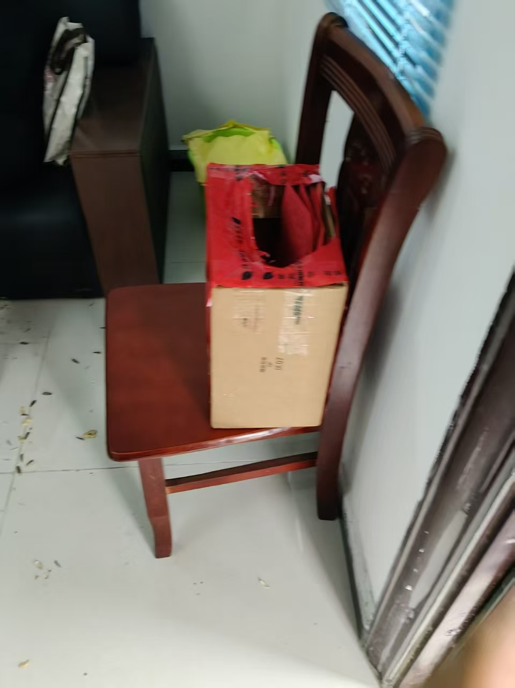
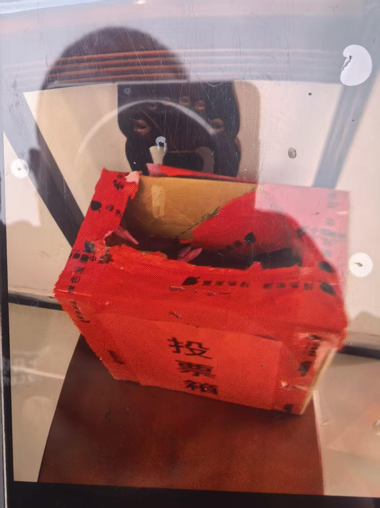
03村民反馈"镇政府接管选票现场、村民选委会辅助组织、现场混乱"重点质疑
线索现场村民反映选举由镇政府主导接管，村民选举委员会处于辅助位置，现场秩序混乱；村民反馈洪港镇袁书记全程坐镇指导选举工作。
村民质疑选举主持主体是否错位；乡镇政府的角色是"指导、监督"还是直接主持。需核实"接管"的具体事实。
法条依据
《村民委员会组织法》第15条：村民委员会的选举，由村民选举委员会主持。
同法第6条：乡、民族乡、镇的人民政府对村民委员会的工作给予指导、支持和帮助，但是不得干预依法属于村民自治范围内的事项。
《湖北省村民委员会选举办法》第11条：村成立村民选举委员会，主持村民委员会的选举工作；第10条：乡镇选举工作指导组职责为"指导和监督村民选举委员会依法开展工作"。
附图 · 村民提供（点击放大）
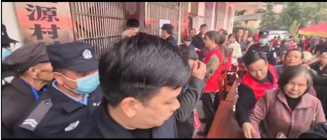
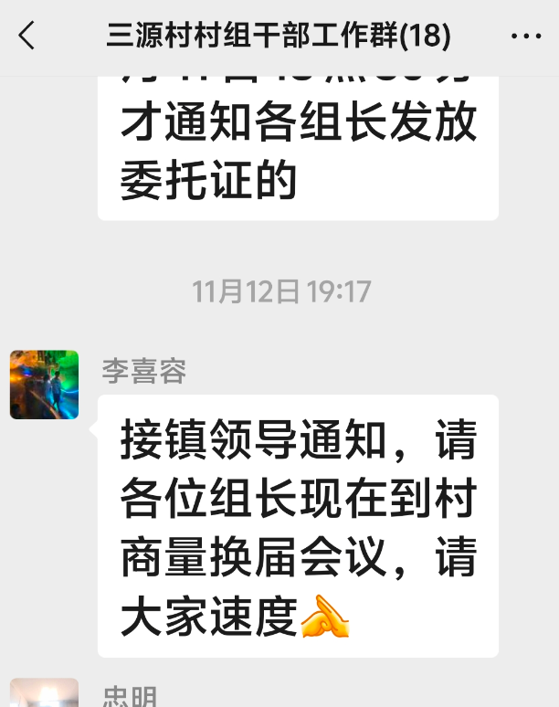
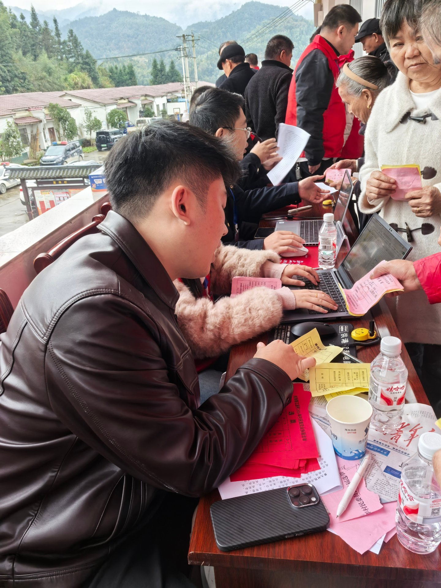
04选民要求现场监督唱票被拒存疑待核
线索选民提出现场监督唱票遭拒；计票现场无选民在场。
村民质疑计票现场无选民在场，选民要求现场监督唱票又被拒，与"公开计票、结果当场公布"的原则是否相符。
法条依据
《村民委员会组织法》第18条第三款：选举实行无记名投票、公开计票的方法，选举结果应当当场公布。
《湖北省村民委员会选举办法》第28条：公开开封检票后，由监票人、唱票人、计票人公开统计票数。
11.12 19:35第一次选举完成，候选人未获过半数选票
05第一次选举计票结束，候选人未过半票事实节点
线索19时35分完成第一次选举，候选人未获过半数选票。
法律后果候选人未获参加投票村民过半数选票的，不得当选；当选人数不足应选名额的，应依法"另行选举"。
法条依据
《村民委员会组织法》第18条第二款：候选人获得参加投票的村民过半数的选票，始得当选。当选人数不足应选名额的，不足的名额另行选举……
《湖北省村民委员会选举办法》第30条：候选人获得参加投票的村民过半数的选票，始得当选；第31条：当选人数不足应选名额的，不足的名额另行选举。
05-1村民提供选票单据照片（点击放大）参考材料
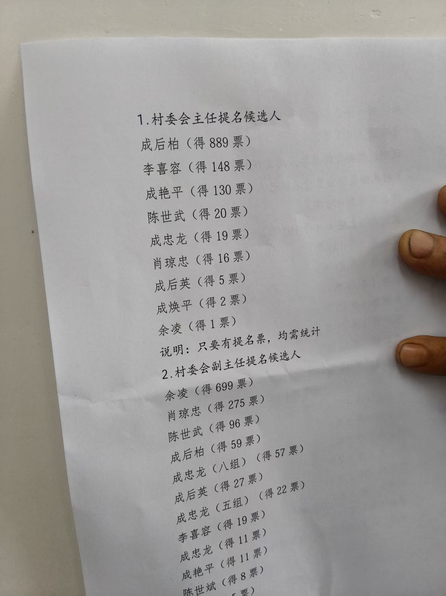
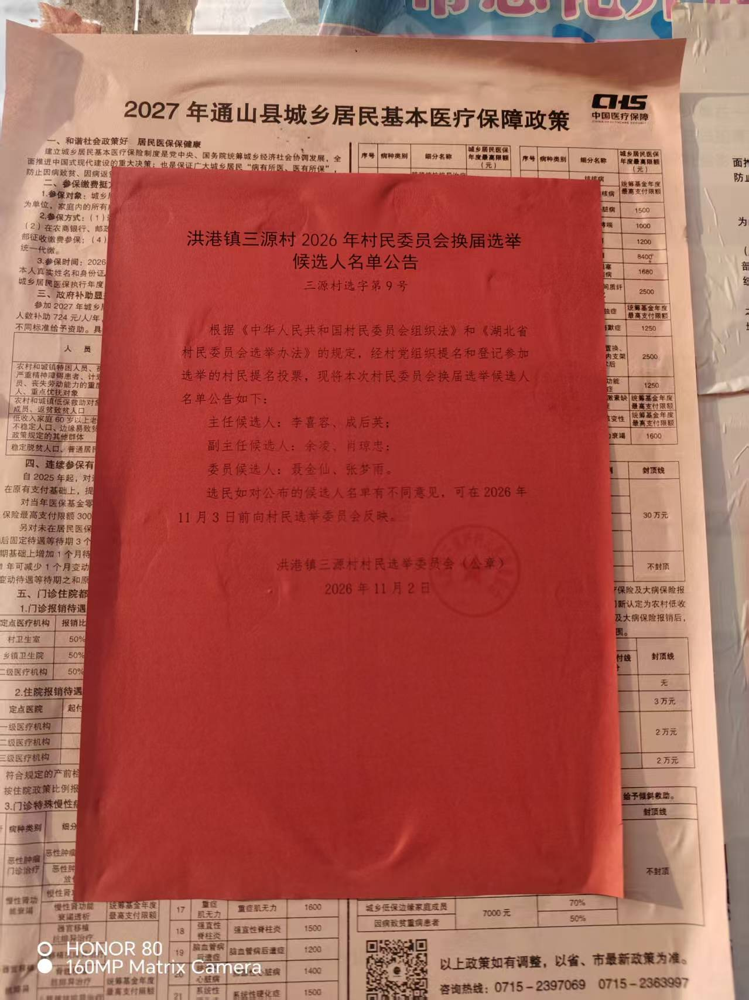
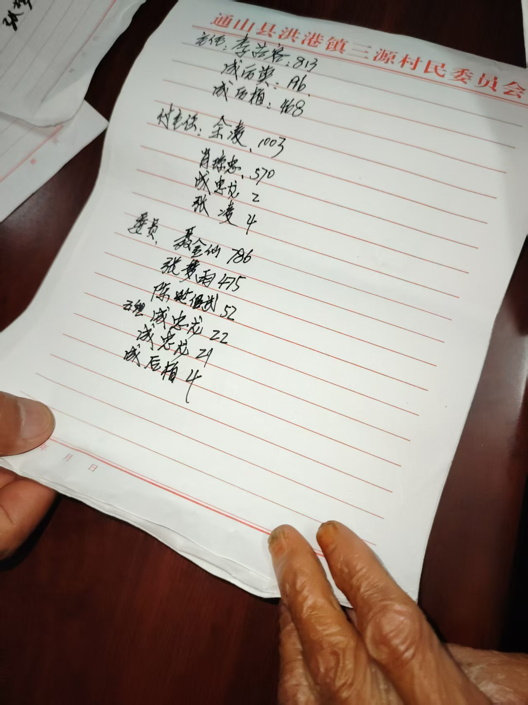
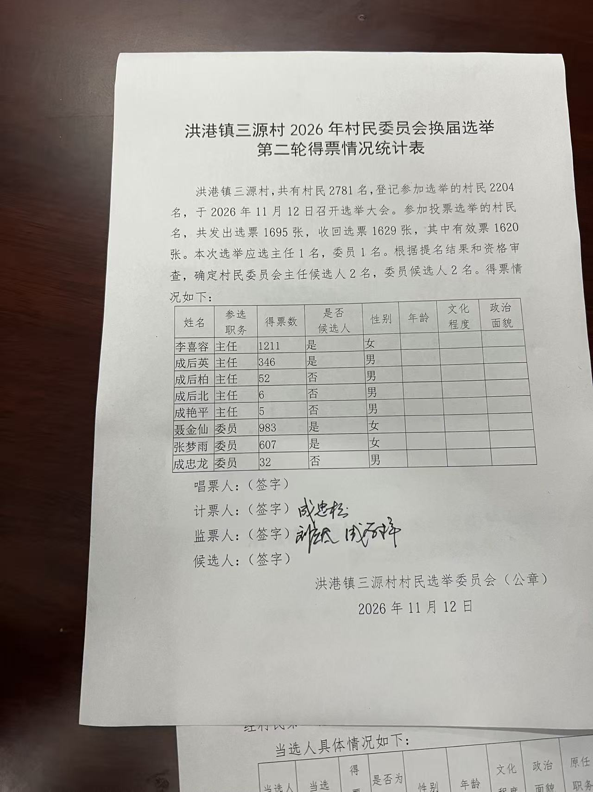
11.12 深夜连夜组织流动票箱上门选举（至近24时许）
06流动票箱的适用对象、决定主体与名单公布程序重点质疑
疑问流动投票箱有严格法定程序：适用对象、名单确定、公示、由谁决定。本次深夜临时增设，上述环节是否履行、由谁拍板。
村民质疑当晚新增流动票箱，其适用对象是否限于老弱病残等不能到场投票的村民，是否经村民选举委员会决定，是否在选举日前公布投票名单，由谁拍板。
法条依据
《湖北省村民委员会选举办法》第24条：对老、弱、病、残等不能到场投票的，经村民选举委员会决定可以设立流动投票箱，并在选举日前公布在流动投票箱投票的村民名单。每个流动投票箱由三名以上工作人员负责，其中应当至少有两名监票人。本村没有不能到场投票的，或者有不能到场投票但全部办理了委托投票的，不设立流动投票箱。
附图 · 村民提供（点击放大）
07另行选举为何安排在同一天深夜重点质疑
线索法定另给期限为十五日至三个月，另行选举却安排在第一次选举当日深夜、多数村民已入睡时段。
村民质疑深夜组织另行选举的时点选择与必要性存疑。
法条依据
《湖北省村民委员会选举办法》第31条：当选人数少于三人的，不足的名额应当在选举日之后的十五日内选出；当选人数已达三人或者三人以上的，不足的名额应当在选举日之后的三个月内选出。
同办法第32条：村民委员会选举无效需要重新选举的，应当在宣布选举无效之日起三个月内进行。
08村民反映无委托代选、一人代投超三人现象普遍重点质疑
线索村民反映，现场存在一人无委托手续替他人投票、且一人代投人数多于三人的现象，较为普遍。材料见录音。［村民提供，详见录音附录］
村民质疑代选既无合法委托、又超过法定每人受托上限，是否影响选举的公正性与结果真实性。
法条依据
《湖北省村民委员会选举办法》第25条：选举期间外出不能参加投票的，可以书面委托本村有选举权的近亲属或者其他村民代为投票。每一村民接受委托不得超过三人，且应当尊重委托人意愿。候选人不得接受委托投票。委托人或者受委托人应当在选举日的七日前，向村民选举委员会办理委托投票；村民选举委员会经核查确认委托有效后，发放委托投票证，并在选举日的五日前公布委托人和受委托人名单。
《村民委员会组织法》第18条第四款：每一村民接受委托不得超过三人；候选人不得接受委托投票。村民选举委员会应当公布委托人和受委托人的名单。
09村民反映未被通知、上门对象存在选择性存疑待核
线索诸多村民反馈未获深夜上门投票通知，上门对象是否存在选择。［部分存证，可进一步调研］
补充线索村民反映，夜间上门选举历时三个多小时，按"一拖三"（每三名工作人员一组）逐户上门敲门组织投票；提请组织评估：在三个多小时内，是否足以完成1695张选票的联系、发放、回收及计票全过程。
村民质疑投票时间、地点、方式及流动票箱投票名单是否依法提前公布，上门对象是否存在选择性，诸多村民未获通知是否属实；上述时间条件能否支撑所述投票规模与流程，恳请核实。
法条依据
《湖北省村民委员会选举办法》第23条第（一）项：提前五日公布选举日投票的具体时间、地点、投票方式。
同办法第24条：……并在选举日前公布在流动投票箱投票的村民名单。
10流动票箱"来无密封、去无封箱"，中途离场、他人可随意靠近触摸重点质疑
线索投票过程票箱未密封、结束未封箱，过程较长且工作人员离场，其他人可随意靠近触摸选箱。［村民提供现场监控截图，见下］
村民质疑票箱全程安全、保密与封箱要求是否落实，直接影响选票真实性与可追溯性。
法条依据
《湖北省村民委员会选举办法》第23条：投票箱应当符合安全、保密的要求。
同办法第28条：投票结束后，所有投票箱应当立即加封，并由选举工作人员在选举日当天送至选举大会会场或者中心投票站集中。
同办法第24条：每个流动投票箱由三名以上工作人员负责，其中应当至少有两名监票人。
证据线索 · 村民提供现场监控截图（点击放大）
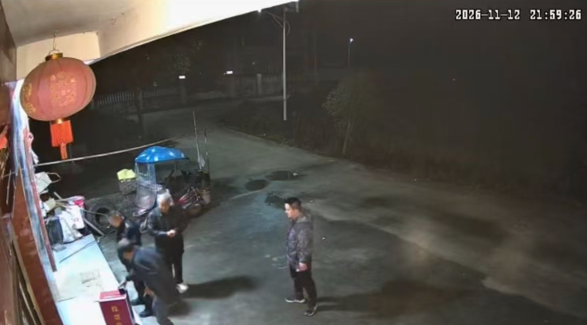
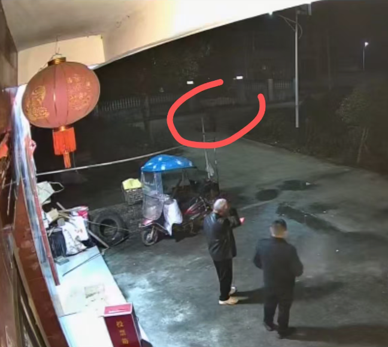
11现场人员构成：仅一人为法定监票人重点质疑
线索村民反馈现场为镇纪委书记何贤林、驻村干部李涛，选举委员会成忠松，仅成忠松一人为法定监票人，其他村民组情况相似，详细见录音。［村民提供，详见录音附录］
村民质疑监票人应由村民选举委员会提名并公布，每个票箱至少两名、流动票箱至少两名监票人；现场仅一名法定监票人，人数是否达标，镇、村干部是否为依法提名公布的选举工作人员。
法条依据
《湖北省村民委员会选举办法》第23条：每个投票箱应当至少有两名监票人；候选人及其近亲属不得担任选举工作人员。
同办法第24条：每个流动投票箱由三名以上工作人员负责，其中应当至少有两名监票人。
同办法第12条第（三）项：村民选举委员会"提名并公布监票人、唱票人、计票人等选举工作人员"。
参考图片 · 投票方式、时间和地点公告（村民提供，点击放大）
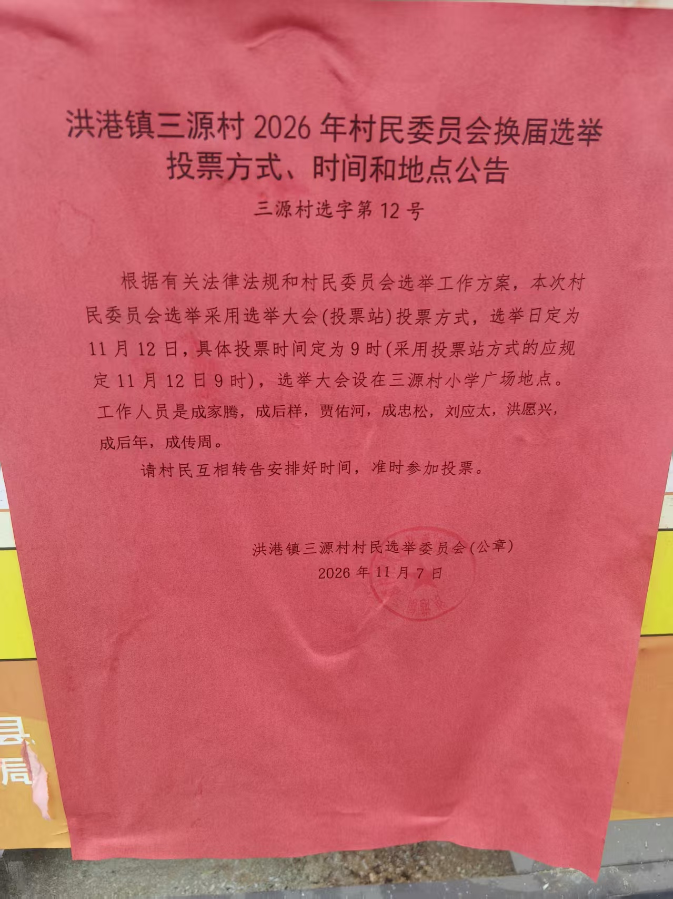
11.13 起村民陆续反馈选举过程问题，并持续反馈中
12村民持续反映上述问题，依据所提供线索协助整理事实节点
线索自11月13日起，陆续有村民反馈选举过程问题，反馈仍在持续。
法条依据
《湖北省村民委员会选举办法》第33条：村民对选举过程或者结果有异议的，可以向乡镇村民委员会选举工作指导组或者乡镇人民政府、县（市、区）人民政府及其有关主管部门提出申诉；相关机关应在收到申诉之日起七日内进行调查并依法处理。
同办法第34条、 《村民委员会组织法》第21条：以暴力、威胁、欺骗、贿赂、伪造选票、虚报选举票数等不正当手段破坏选举的，村民有权举报，由乡镇或者县级人民政府负责调查并依法处理。
同办法第42条、第44条：违反选举规定的，责令改正并对责任人员依法处理；国家机关工作人员在选举工作中滥用职权、玩忽职守、徇私舞弊的，依法给予处分，构成犯罪的追究刑事责任。
相关材料附录 · 通话录音
以下为村民提供的通话录音，按文件名标示的联系人与日期列出，可点击播放。录音内容、真实性及与本案关联性待监管权威部门核实，本整理不转写、不作推断。联系人号码已从文件名作打码处理，完整信息可向提供方获取。
录音一：成家运
文件名标示时间：2026-11-13 11:53 ｜ 来源：村民提供
录音二：家腾
文件名标示时间：2026-11-09 09:06 ｜ 来源：村民提供
录音三：陈绪文
文件名标示时间：2026-11-13 20:23 ｜ 来源：村民提供
村民请求事项
- 依法调取并固定第一次投票及当晚流动票箱的选票、票箱、封签、计票记录及相关影像资料；
- 核查流动票箱流程启动设置、名单公布、监票人产生及计票唱票等环节是否符合法定程序；
- 核查镇领导是否存在干预依法属于村民自治范围内选举事项的情形；
- 将调查结论依法向村民公布。
建议问询（供领导参考）
- 向村民选举委员会成员、候选人及镇党委现场指导人员咨询，听取现场情况和决策过程；
- 走访选民，多方调研，立体综合判断。
说明
- 本材料系依据村民反馈线索汇编而成，所列情形均为待查事项，尚未经有权机关调查核实，不代表已确认的事实。
- 文中"重点质疑""存疑待核"等标注，仅为对照现行条文后提示需进一步查证的方向，不构成对任何单位或个人的事实认定或违规定性。
- 村民注明"有存证""可调研"及文中所附图片，恳请监管权威部门依法调取、固定相关证据并予以核实；图片均为村民提供，本整理不预判其真伪。
- 线索所涉各环节是否符合规定、相关行为是否成立，期待并提请县级监管权威部门依法调查核实，以官方结论为准。
- 仅陈述线索与对应法律依据，不对相关人员的动机、责任作评价。
重点质疑：线索如属实，与法条明文要求存在较明显冲突
存疑待核：情形可能影响程序合规，需结合事实与法律要件进一步核实
事实节点：客观时间节点，本身不指向违规